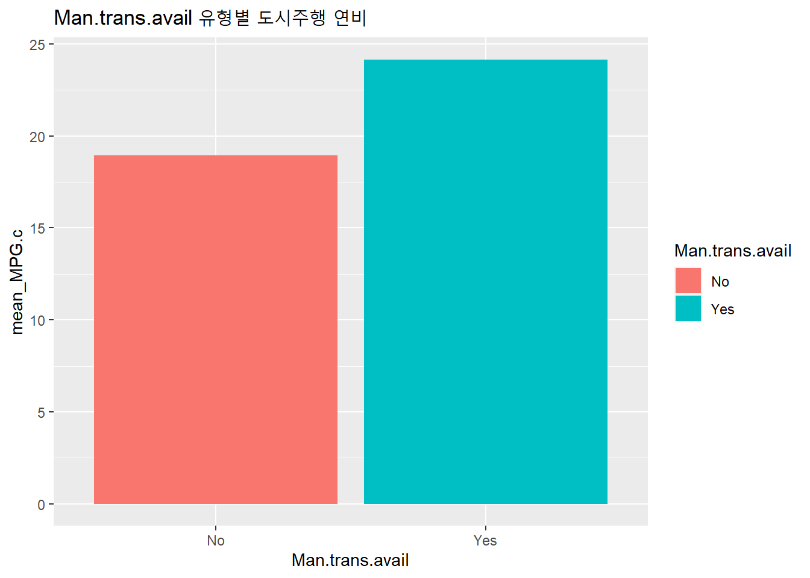

5.5 문자 추가 : text(x, y, labels, ...), mtext()
지난번 포스팅에서는 그래프에 추가적인 정보를 입력하는 낮은 수준의 그래프 함수(low level graphic functions) 중에서
제목, XY축 Label 추가하는
title()XY축의 형태를 변환하는
axis(side, ...)직선 연결, 추가 :
lines(x, y),abline(a, b),abline(h=y),abline(v=x)점 추가 :
points(x, y)
에 대해서 알아보았습니다.
이번 포스팅에서는 낮은 수준의 그래프 함수 네번째로 (5) 문자 추가 : text(x, y, labels, ...), mtext() 에 대해서 소개하겠습니다.
[ 낮은 수준의 그래프 함수 (Low level graphic function) ]

Figure 5.6: 낮은 수준의 그래프 함수 : 문자 추가
그래프에 문자를 추가할 때 text() 함수와 mtext() 함수를 사용합니다. 차이점은 text()가 그래프 내에 문자를 추가할 때 사용하는 반면, mtext()는 외부 마진 영역(1 하단, 2 좌측, 3 상단, 4 우측)에 문자를 추가할 때 사용한다는 것입니다.
text() 함수와 mtext() 함수의 일반적인 사용법은 아래와 같습니다.
| 함수 (function) | 사용법 (usage) |
|---|---|
| text() | text(x, y, labels = , pos = , … ) |
| mtext() | mtext(“text to place,” side = , line = , adj, outer = , … ) |
| 함수 | 옵션 | 기능 설명 |
|---|---|---|
| text() | x, y | 문자를 추가할 위치의 x, y좌표. 단, x, y 좌표 대신에 locator(1) 을 입력하면 커서로 지적하는 곳에 문자를 추가함 |
| labels = " " | 추가할 문자 | |
| pos = | 좌표를 기준으로 문자를 입력할 상대적인 위치 : 1=below, 2=left, 3=above(default), 4=right | |
| … | 폰트, 색깔, 크기 등의 그래프 모수 지정 | |
| mtext() | “text to place” | 추가할 문자 |
| side = | 문자를 추가할 위치 : 1=bottom, 2=left, 3=top(default), 4=right | |
| line = | 문자와 그래프와의 마진 거리 (to indicate the line in the margin starting with 0 and moving out) | |
| adj = | adj=0 : 왼쪽/아래쪽 정렬, adj=1 : 위쪽/오른쪽 정렬, 생략 : 중앙 정렬 (adj=0 for left/bottom alignment or adj=1 for top/right alignment) | |
| outer = | outer=TRUE : 외부마진에 문자 추가 outer=FALSE : 내부마진에 문자 추가 | |
| … | 폰트, 색깔, 크기 등의 그래프 모수 지정 |
MASS 패키지에 내장되어있는 Cars93 데이터프레임의 차 무게 (Weight), 고속도로 연비 (MPG.highway) 변수를 활용해서 산포도를 그리고, 모델명(Model) 변수를 가지고 text를 추가해보겠습니다.
##-------------------------------------------
## adding text to the plot : text(), mtext()
##-------------------------------------------
## adding text within a plot : text()
attach(Cars93) ## The following object is masked _by_ .GlobalEnv:
##
## Cylinders## The following objects are masked from Cars93 (pos = 3):
##
## AirBags, Cylinders, DriveTrain, EngineSize, Fuel.tank.capacity,
## Horsepower, Length, Luggage.room, Make, Man.trans.avail,
## Manufacturer, Max.Price, Min.Price, Model, MPG.city, MPG.highway,
## Origin, Passengers, Price, Rear.seat.room, Rev.per.mile, RPM,
## Turn.circle, Type, Weight, Wheelbase, Widthplot(Weight, MPG.highway, main = "scatter plot of MPG.highway ~ Weight")
text(x = Weight, y = MPG.highway, labels = Model, pos = 3, cex = 0.5)
text(x, y, ) 좌표 대신에 text(**locator(1)**, ) 옵션을 사용하면 커서로 문자가 들어갈 위치를 콕 찍어서 지정할 수 있습니다. reproducible research 관점에서 보면 추천할 만한 방법은 아닌데요, x, y 좌표를 정확히 모르거나, 한번만 간편하게 그래프 그려서 볼 목적이라면 큰 문제는 없겠습니다.
# placing text at the point of cursor : locator(1)
plot(Weight, MPG.highway, main = "scatter plot of MPG.highway ~ Weight")
text(locator(1), labels = "Low Mileage Per Gallon")## Error in text.default(locator(1), labels = "Low Mileage Per Gallon"): 좌표가 제공되지 않았습니다
detach(Cars93)다음으로 mtext() 를 사용해서 그래프 외부 마진 영역에 문자를 추가해보는 예제입니다.
title() 함수로 제목을 추가하는 것과 유사한 측면이 있는데요, mtext()의 경우 여러 개의 그래프를 결합했을 때 외부마진에 그래프 전체를 아우리는 제목을 자유롭게 추가할 수 있다는 유용한 장점이 있습니다.
## places text in one of the four margins : mtext()
# Save default par values
op <- par(no.readonly = TRUE)
# combining 2 graphs in 1 row
par(mfrow = c(1,2), # 1 row, 2 windows +
oma = c(2, 2, 4, 1)) # outer margin
attach(Cars93)## The following object is masked _by_ .GlobalEnv:
##
## Cylinders## The following objects are masked from Cars93 (pos = 3):
##
## AirBags, Cylinders, DriveTrain, EngineSize, Fuel.tank.capacity,
## Horsepower, Length, Luggage.room, Make, Man.trans.avail,
## Manufacturer, Max.Price, Min.Price, Model, MPG.city, MPG.highway,
## Origin, Passengers, Price, Rear.seat.room, Rev.per.mile, RPM,
## Turn.circle, Type, Weight, Wheelbase, Widthplot(Weight, MPG.highway, main = "MPG.highway ~ Weight") # plot 1
plot(Horsepower, MPG.highway, main = "MPG.highway ~ Horsepower") # plot 2
mtext("MPG.highway by Weight, Horsepower",
side = 3, # which margin to place text. 1=bottom, 2=left, 3=top, 4=right
line = 1, # to indicate the line in the margin starting with 0 and moving out
adj = 2, # adj=0 for left/bottom alignment or adj=1 for top/right alignment
cex = 2, # font size
outer = TRUE) # outer = TRUE : to place text at outer margin 
detach(Cars93)
# Reset par to the default values at startup
par(op)다음번 포스팅에서는 범례(legend) 추가하는 방법에 대해서 알아보겠습니다.